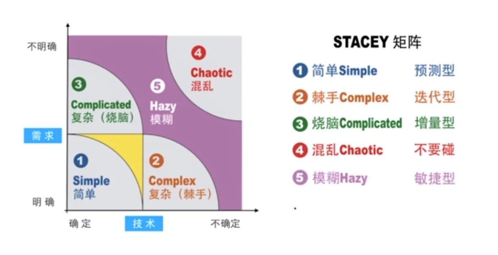

Scrum一词来源于英式橄榄球比赛，原意为“密集争球”，寓指整个团队攒足力量，为了一个共同的目标，一起向前发起冲刺。Scrum的发明者认为这与开发人员以迭代、增量的方式集中全力交付产品的过程非常相似，所以将这种开发方法命名为Scrum。
Scrum是敏捷开发方法中最为广泛使用的一种方法，它的发展历史可以追溯到20世纪80年代初期。1995年，Ken Schwaber和Jeff Sutherland在美国首次提出了基于Scrum理念的敏捷开发框架，在2001 Scrum正式被纳入敏捷开发实践的范畴。2009年由Scrum联盟制定了Scrum的规范和认证程序，Scrum得到快速推广和发展。
最新版的Scrum Guide(2021版)中强调Scrum作为为一个轻量级的框架目的是帮助个人、团队、组织通过建立解决复杂问题的自适应机制来创造价值，它鼓励通过透明和反馈来最大限度地挖掘团队潜力、交付客户需求。与传统的方法相比，Scrum采用了更加简洁、灵活的方式来管理软件开发项目，具体而言Scrum具有以下几个方面的特点：
规范简洁：

Scrum框架只有三个角色、五个活动和三个文档，它将整个开发周期划分为若干小的迭代周期，每个小的迭代周期称为Sprint，每个Sprint的长度为2到4周。
在Scrum中，使用产品待办列表（Product Backlog）来管理产品或项目的需求，Scrum团队会优先开发对客户具有较高价值的需求。在每个Sprint中，Scrum开发团队首先在Sprint计划会上从产品Backlog中挑选最有价值的一部分需求，然后对这些需求进行分析、讨论和估算得到一个Sprint的任务列表(Sprint Backlog)，然后每日跟进开发进展（Daily Scrum），在每个Sprint结束时，Scrum团队将交付潜在可交付的产品增量，并通过回顾来总结和改进。
我们可以用3355来概括Scrum框架:
3个角色： Product Owner、Scrum Master、Scrum团队
3个工件： 产品待办列表、冲刺待办列表和迭代增量
5个仪式： Sprint、Sprint Planning Meeting、Daily Scrum、Sprint Review Meeting、Sprint Retrospective Meeting
5个价值观： 承诺、专注、开放、尊重和勇气。
强调实效：
Scrum不是一种规范或过程，而是一种实践框架，它强调的是通过快速反馈和透明度来不断优化开发过程，以实现最大化的客户价值。Scrum 有三大支柱: 透明性、检视和适应，Scrum框架通过定义一系列会议与工件来实现这三个目的：
1.透明（Transparency）
透明是指，在软件开发过程的各个环节保持高度的可见性，影响交付成果的各个方面对于参与交付的所有人、关心交付结果的人保持透明。相关人员不仅要能够看到过程的方方面面，而且必须理解他们看到的内容。也就是说，当某个人在观察一个过程，并确信某一个任务已经完成时，这个完成必须等同于他们对完成的定义。
2.检视（Inspection）
开发过程中的各方面必须做到足够频繁地检视，确保能够及时发现过程中的重大偏差。在确定检视频率时，需要考虑到检视会引起所有过程发生变化。当规定的频率超出了过程所能容许的程度，那么就会出现问题。幸运的是，软件开发并不会出现这种情况。另一个因素就是负责检视的人员的技能水平和积极性，我们需要确保负责检视的人有足够的专业技能做出相应的判断，并且有足够的责任心和主动性去解决发现的问题。
3.适应（Adaptation）
对于检视过程发现的偏差和潜在问题，我们需要有相应的机制进行复盘与改进，当发现的问题可能对交付质量、交付效率产生影响时更需要启动对应的机制进行讨论与改进 ，可以利用站会、回顾会、专题会等机会触发改进机制的启动，同时要确保改进动作快速实施，以减少进一步的误差。
强调自组织：
Scrum强调的是在自组织的团队中进行协作和决策，充分发挥团队每个人的专长，以此推动问题解决，这是基于以下理念：对于新的复杂产品的开发，只有为小型且自组织的团队指定目标而不是特定任务，才能达到最佳效果。 团队可以自由决定实现这些目标的最佳方法。 Scrum还定义了有时间限制的Sprint周期，通过小周期快速迭代实现团队的自我进化，一个理想的Scrum过程如下：
- 产品负责人将复杂问题的工作安排到产品待办列表中。
- Scrum 团队在 Sprint 期间将选择的工作转化为价值增量。
- Scrum 团队及其利益相关者检查结果并为下一个 Sprint 进行调整。
- 重复
高灵活度：
Scrum并不是一个开箱即用的完整方法论，它本身没有指定太多细节，它强调由使用框架的人来进行补充和完善的重要性，它提供的类似于一套未装修的写字楼，需要使用者根据自己的实际情况完成装修：比如Scrum框架中使用产品代表列表来管理需求，那产品待办列表里放的是什么呢？需要使用者自己来选择，大多数会选择使用用户故事来填充，也有团队会选择用需求条目来填充。再比如Scrum框架并未对研发过程采用的实践进行说明，那就需要实践者自己选择采用哪些研发实践（比如”极限编程“).
Scrum这个特性确保了它的灵活性，使用者可以从过去五十多年的优秀实践中选择最适合的那些，不同人、不同公司、不同行业可以演化出最适合自己的方法论。
面向复杂问题
Scrum的目标是提供针对复杂问题的解决方案，这并不是说对于简单问题Scrum没有效果，而是说在解决复杂问题时会体现出更多的价值。Scrum的这个特点往往也成为项目团队选择是否采用Scrum的一个主要因素。通常我们在分析软件项目时往往从业务复杂度和技术复杂度两个维度进行分析，这个分析思路来自著名的Stacey矩阵，通过判断项目处于Stacey矩阵中的位置来选择适用的项目管理过程。

自1995年首次发行至今，Scrum已被全球众多软件公司所采用。今天，它被认为是敏捷软件开发中应用最广泛的框架。针对Scrum已经出版了1000多本书，该方法也已经成功地应用于其他领域，例如：制造，营销，运营和教育。
2015年以来，互联网带来的巨变使敏捷方法受到了更多开发团队的欢迎，而其中Scrum以其扩展性、门槛低、名字和术语更容易被接受等因素，逐渐成为最受欢迎的敏捷实践。如今，Scrum的影响已经远远超出软件开发领域，成为零售、军事、风险投资甚至学校里完成各种任务的创新方法，Scrum正在改变着世界。
最后我们引用《人月神话》作者弗雷德·布鲁克斯（Fred Brooks）在“ No Silver Bullet—Essence and Accidents of Software Engineering”的文章中的观点：没有任何单一的技术或过程可以带来软件开发效率的显着提高。这句话对敏捷同样适用，并不是实践了Scrum或者XP就可以解决你的所有问题，先定义清楚你面临的问题，然后去找到适合你的那些实践。